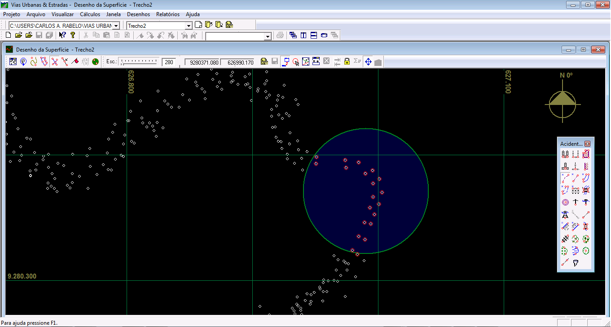
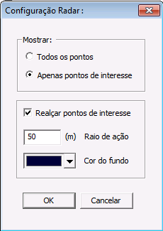

Radar
RADAR:
O Radar foi criado para facilitar a ligação dos pontos referentes aos acidentes topográficos. Com ele a tarefa de criação dos acidentes topográficos fica muito mais simples e rápida principalmente onde há uma alta densidade de pontos.

Trecho sem a ação do radar

Radar em ação, neste caso estão visíveis apenas os pontos do bordo da estrada existente
Na tela do Radar você visualiza apenas os pontos do acidente topográfico que esta sendo criado ou editado, os outros pontos referentes aos outros acidentes topográficos não aparecem. Deste modo você vai direto ao próximo ponto sem a necessidade de ficar procurando o próximo ponto entre os pontos existentes.
O radar evita a ligação entre pontos errados e principalmente que se pule a sequência dos pontos, o que obriga a remoção da ligação com o ponto errado e a religação com o ponto correto. Para configurar Radar vá no diálogo de configurações e selecione o botão |Radar...|
DIÁLOGO DE CONFIGURAÇÃO DO RADAR:

São os seguintes os campos deste diálogo:
Campos:
Todos os Pontos :
Selecione está opção se você deseja visualizar todos os pontos na tela do radar.
Apenas os Pontos de Interesse :
Selecione esta opção se você deseja visualizar na tela do radar apenas os pontos do acidente topográfico que estiver selecionado na caixa de ferramentas.
Realçar Pontos de Interesse :
Selecione esta opção se você deseja que os pontos do acidente toográfico que estiver sendo editado sejam realçados com um círculo vermelho.
Raio de Ação :
Digite neste campo o valor do raio de ação do radar (usualmente 50m). Os pontos que estiverem dentro da circunferência cujo centro é o local do mouse com o raio digitado sofrerão a ação do radar.
Cor do Fundo:
Pressione a seta para baixo e selecione a cor que deseja para a tela do radar. As cores padrão apresentadas no diálogo de cores são muito brilhantes e podem provocar cansaço visual. Para se evitar isto, diminua a luminosidade da cor selecionada para pelo menos menos que 30. Para fazê-lo, após selecionar a cor desejada pressione o botão seta para baixo novamente, vá em Outras (Other) e selecione a ficha Customizar (Custom) e mova a seta do lado direito das cores até que o valor da Luminância (Luminense) esteja abaixo de 30.
Botões:
- OK:
Este botão fecha o diálogo e configura o radar com os novos dados.
- Cancelar:
Este botão fecha o diálogo e cancela todas as alterações feitas no dialogo, ou seja, o radar permanecerá com os valores antigos.
Created with the Personal Edition of HelpNDoc: Free EPub producer